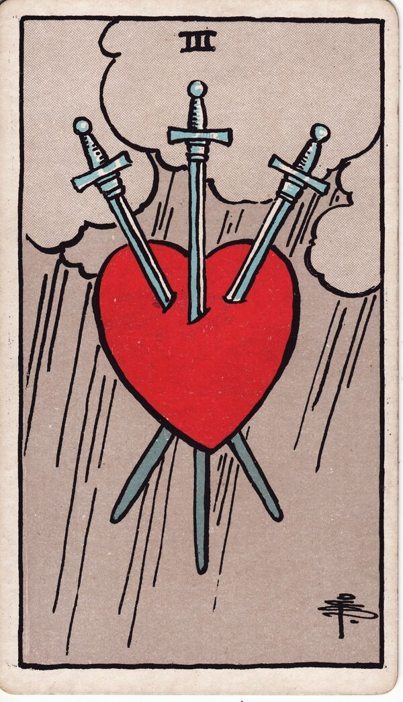

Minor Arcana · Suit of Swords
Three of Swords Tarot Card Meaning
The Three of Swords is the pierced heart in the rain — heartbreak, hard truth, grief that must be felt. Want to know what it means in your spread? Every reader on our line is hand-vetted — connect in under 60 seconds, $1 for your first minute, hang up anytime.
- Hand-vetted readers
- Available 24/7
- Hang up anytime

Three of Swords — What It Shows
A single red heart is pierced by three swords against a grey, storm-darkened sky with falling rain. There's no figure — the image is the feeling itself, stripped of distraction. After the avoidance of the Two, the Three is what the blindfold was protecting against: the pain felt fully. The storm is not gentle, but rain clears the air, and the card carries that too.
Three of Swords Upright Meaning
Upright, the Three of Swords is heartbreak, painful truth, sorrow, and grief. A betrayal, a loss, harsh words, or a reality you can no longer avoid. It doesn't soften the hurt — its honesty is the point. Its core message: let the pain be felt so it can move through rather than calcify.
Three of Swords Reversed Meaning
Reversed, the storm passes. Healing, recovery, forgiveness, releasing the pain, the worst of the grief behind you. Less positively, it can be suppressed sorrow — refusing to process the hurt, so it lingers underground.
Three of Swords in Love & Relationships
In love, the Three of Swords is heartbreak, betrayal, separation, or a painful truth about a relationship. Example: a caller who sensed something was wrong drew this card; the read didn't sugar-coat it — a painful truth was surfacing — and focused on facing it honestly so healing could begin instead of dragging the wound out in denial.
Three of Swords in Career & Money
For work it's a disappointing outcome, a hard truth, conflict, or a painful setback. Example: someone blindsided by feedback or a loss pulled this card; the message acknowledged the genuine sting while pointing to the clearing the honesty makes possible once it's felt rather than fought.
Three of Swords as Advice
As advice: don't armour over the hurt. Feel it honestly, hear the hard truth, and let the storm pass through you — that's how it clears rather than festers.
Three of Swords Reversed in Love & Career
Reversed, this card is often the more hopeful of the two. In love, it's healing after heartbreak — forgiveness, releasing an old wound, the rain finally stopping; the harder version is grief you're stuffing down rather than processing, which prolongs it. In career, reversed it's recovering from a professional blow and moving on, or conversely refusing to admit a painful truth. The reversed Three's question is whether you're healing the wound or hiding it. A live reader can help you tell recovery from avoidance.
What People Ask About the Three of Swords
The questions readers hear most about this card:
"Does it mean a breakup or cheating?"
It can — heartbreak or betrayal — but surrounding cards say what kind and whether it's past.
"Three of Swords as feelings?"
Hurt, betrayed, grieving — sometimes "you hurt me."
"Is the pain in the past or coming?"
Position and nearby cards clarify; reversed often means it's passing.
"Is there any hope here?"
Yes — rain clears; reversed especially points to healing.
Three of Swords — Yes or No?
Leans no, weighted by pain. Reversed shifts toward yes as healing takes hold.
Three of Swords Timing in a Reading
Timing is the least precise thing tarot does, so treat this as a lean, not a date. The Three of Swords describes a grieving phase more than an event — readers usually frame it as present and lasting until the pain is processed, not a fixed number of days. Reversed signals the storm is lifting. A live reader reads timing from the full spread and your question far more reliably than the card alone.
Three of Swords Card Combinations
Context changes everything — a few pairings readers see often:
Three of Swords + The Tower
A sudden, painful revelation or rupture.
Three of Swords + Star
Heartbreak followed by genuine healing and hope.
Three of Swords + Five of Cups
Deep grief and regret — focused on the loss.
Three of Swords in a Tarot Reading
A meanings page is the map; a live reading is the territory. The Three of Swords shifts with its position and the cards around it — which is what a hand-vetted reader interprets for your question. See the full Suit of Swords, all 56 cards on the Minor Arcana hub, or start a phone tarot reading.
← Two of Swords · Next: Four of Swords →
What Does the Three of Swords Mean for You?
A meanings list is the map; a live reading is the territory. We'll connect you with the right hand-vetted tarot reader in under 60 seconds. $1/min first call · 15 minutes for $10 · hang up anytime · 100% satisfaction promise.
Call (888) 920-6662 NowThree of Swords — Frequently Asked Questions
What does the Three of Swords mean?
Heartbreak, painful truth, and grief — sorrow that has to be felt.
What does it mean reversed?
Healing, recovery, forgiveness, and releasing pain — or suppressed grief.
What does the Three of Swords mean in love?
Heartbreak, betrayal, separation, or a painful truth about a relationship.
Is it a yes or no card?
Leans no, weighted by pain; reversed shifts toward yes.
How much does a reading cost?
First-time callers pay $1/min, or 15 minutes for $10, and you can hang up anytime.
Get Your Tarot Reading Now
Connected to a hand-vetted reader in under 60 seconds, the cards pulled on your real question, and you hang up with clarity.
Call (888) 920-6662